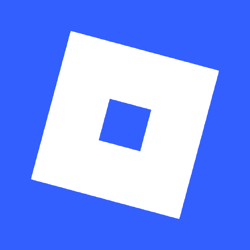
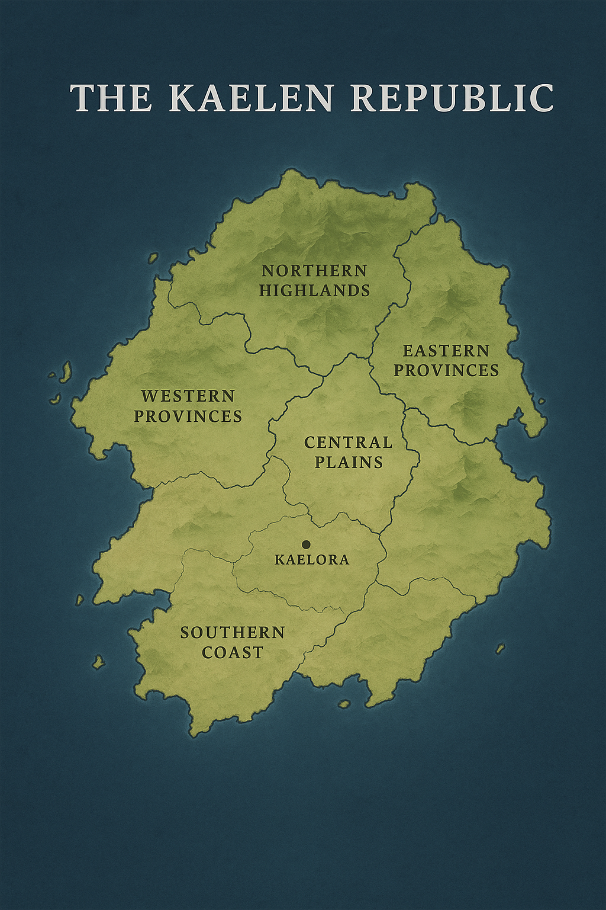

Roblox
A global interactive entertainment platform focused on community-created experiences. Owned by the State Investment Authority.
Unity • Progress • Freedom
The Kaelen Republic is a thriving island nation celebrated for its innovation, cultural diversity, and deep respect for democracy. Its citizens — the Kaelens — embody values of unity, equality, and responsibility for future generations.
Situated in the heart of the Azure Sea, The Kaelen Republic features sweeping coastlines, rich agricultural plains, and majestic northern mountains. Its climate is temperate and oceanic, fostering vibrant ecosystems and sustainable living.
The Kaelen Republic is a constitutional democracy governed by the Assembly of Provinces and led by an elected Prime Minister. The government emphasizes transparency, civic engagement, and technological advancement for public welfare.
Arion Varek has served as Prime Minister since 2023. A former engineer and diplomat, he is known for his visionary leadership, focus on green technology, and commitment to international cooperation. Under his guidance, The Kaelen Republic has advanced in digital infrastructure, education reform, and sustainable energy development.
His administration’s guiding principle is “Progress through Unity,” a reflection of the nation’s enduring belief that collective strength drives innovation and peace.
Kaelen culture celebrates creativity, balance, and innovation. The people value both ancient traditions and futuristic ideas. Festivals like the Festival of Lights honor the Republic’s founding through art, music, and community unity.
Publicly-held, wholly-owned, and strategic investments managed by the Republic.
A global interactive entertainment platform focused on community-created experiences. Owned by the State Investment Authority.
A renewable-energy startup specializing in modular grid systems. Acquisition pending regulatory approval.
A logistics and automation firm being integrated to support national infrastructure projects.